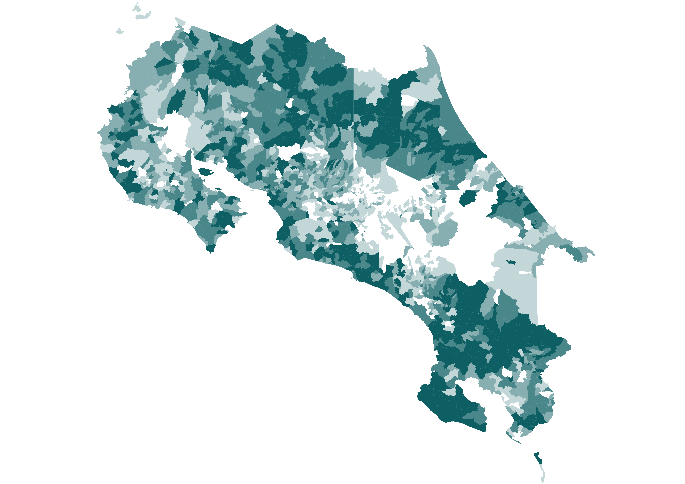
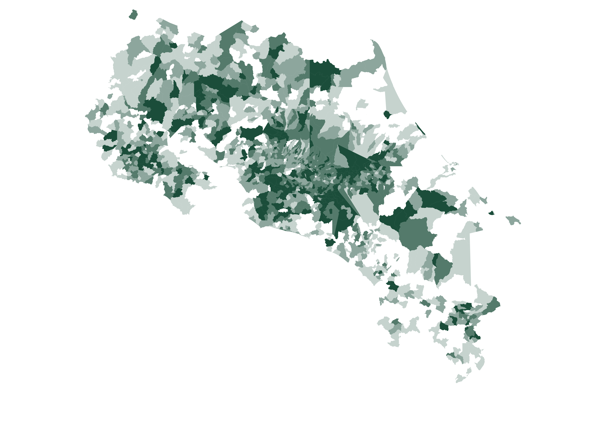
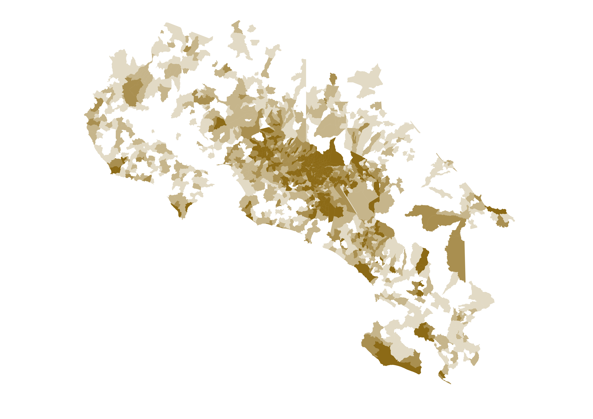

Del voto a la Asamblea Legislativa
Un análisis de la otra papeleta
Recientemente, escribí acerca de las tendencias del voto observadas en la última elección presidencial costarricense. Entre las apreciaciones extraídas en el texto, destacó el incremento de la polarización entre las dos mayores fuerzas políticas a nivel nacional. Este fenómeno no se limitó a la preferencia presidencial. Aparte de las representaciones unipersonales, la nueva Asamblea Legislativa está segmentada en unas únicas tres bancadas, cuyos electorados representan a sectores contrastados de la población general. Bien se podría decir que desde el bipartidismo, el país carecía de fracciones de tal magnitud.
A pesar de la tendencia a votar cohesivamente en ambas papeletas, el comportamiento electoral no siempre fue equivalente, habiendo hecho presencia el denominado “quiebre de voto”. El análisis de la otra papeleta aporta matices dignas de considerar en el panorama nacional, especialmente al momento de inferir el futuro del primer poder de la república.
I. Partidos y bases territoriales

Pueblo Soberano se consolida como la indiscutible primera fuerza política del país. El voto arrastre de Laura Fernández fue suficiente para dotar de mayoría legislativa al partido sin incurrir en intercambios electorales con otras agrupaciones. El quiebre de voto oficialista fue mínimo, y el ocurrido sucedió principalmente en la periferia del país y fue dirigido a favor de la candidatura presidencial del partido. Estas excepciones serán detalladas posteriormente en este artículo. Por las razones previamente comentadas, el electorado legislativo de Pueblo Soberano fue calcado del de su contraparte presidencial y la reflexión sobre el mismo es redundante.

Un caso opuesto fue encontrado en el comportamiento del principal partido opositor. El resultado legislativo de Liberación Nacional difirió del de Álvaro Ramos al ser notablemente más rural. Los vestigios del partido en la Península de Nicoya y la cordillera de Tilarán fueron más marcados y los candidatos a diputados llegaron a superar a Ramos en cantones con fuerte presencia del municipalismo como los rurales del oeste de San José.

El Frente Amplio actual es un partido cuya existencia depende de la urbe, siendo la antítesis electoral de no únicamente Pueblo Soberano, sino de sus inicios como agrupación política. Los resultados consistentes del Frente Amplio en la Gran Área Metropolitana, incluyendo a Occidente de Alajuela, fueron suficientes para elegir una fracción numerosa sin necesidad de incurrir a representación costera por el momento. Al ser comparado con el resultado presidencial de Ariel Robles, el cual tendió a ser más diverso, el electorado legislativo estuvo concentrado en mayor medida en el Valle Central.
II. Realineamiento y transformación electoral

Comparado con la última ocasión en que estuvo en la papeleta, el oficialismo logró ampliar sustancialmente sus ganancias en regiones como la Península de Nicoya, la Zona Norte y Pococí. Por el contrario, en los suburbios de Heredia y en las regiones agropecuarias de Cartago tendió a perder votos en comparación con hace cuatro años. El realineamiento político actual muestra cómo un país ya polarizado electoralmente pasa a serlo en mayor medida, lo cual se relaciona con el impacto de las políticas identitarias a nivel nacional.

La participación en 2026 tampoco podría comprenderse enteramente sin una introspección hacia las tendencias previas. Si bien es cierto que el Valle Central fue el epicentro de la votación, no fue la razón de la reducción del abstencionismo. En ningún proceso electoral reciente la periferia había sido tan determinante para la política electoral. El fenómeno causado por la exitosa maquinaria periférica oficialista, mezclado con las mayores tasas de natalidad en las costas, genera un revés demográfico difícil de revertir para los contendientes del gobierno. La victoria de Laura Fernández fue posible en gran medida gracias a un electorado que raramente acudía a las urnas con anterioridad. Aunque la reducción del abstencionismo fue celebrada a través del espectro político, una única fuerza obtuvo más rédito de la misma.
III. Estudios de caso territoriales

El triunfo de Laura Fernández marca la tercera vez desde la concepción del multipartidismo en la que un candidato emerge vencedor sin el consentimiento de la urbe. Álvaro Ramos logró márgenes históricos en distritos altamente desarrollados como Sánchez y San Rafael. Los llamados “barrios del sur” del cantón central y Alajuelita, sin embargo, le brindaron su respaldo al oficialismo, creando un corredor que separó al liberacionismo en dos.

Puerto Limón fue holgadamente ganado por el oficialismo, despidiendo el dominio local del “fabricismo”. Como es usual en las regiones periféricas, las localidades con una mayor densidad poblacional se acercaron en mayor medida a los resultados del Valle Central.

La Lucha y San Cristóbal, fieles al liberacionismo desde la Guerra Civil, le otorgaron nuevamente su apoyo. A pesar de esto, los márgenes de Álvaro Ramos aquí fueron limitados en comparación con comicios previos.

La Península de Nicoya, un bastión de Liberación Nacional a partir de la segunda presidencia Arias, se volteó hacia el gobierno y Pueblo Soberano, consolidando así una tendencia que ya había empezado en 2022.
Notas sobre los datos: La participación en los centros penitenciarios podría resultar imprecisa debido a que su padrón está sujeto a cambios constantes. En el Hogar de Larga Estancia Fray Casiano de Madrid no se registraron votos en las juntas receptoras correspondientes. Se agradece al usuario de X Timothy Hormigos (@bnstim) por proveer la plantilla para las ventanas emergentes del mapa interactivo.